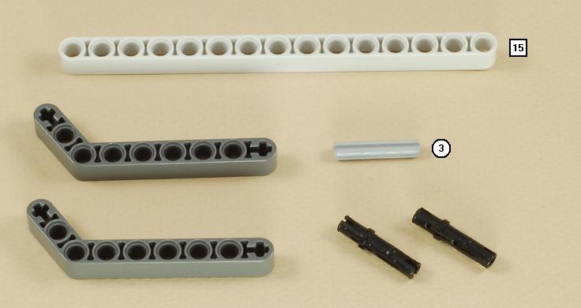
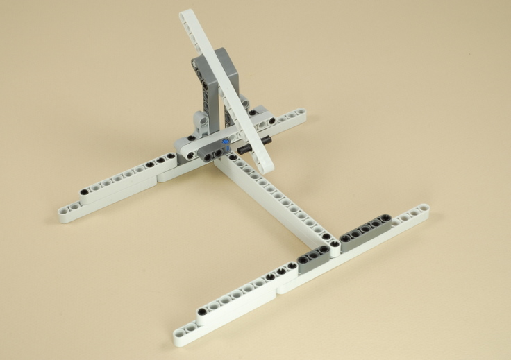
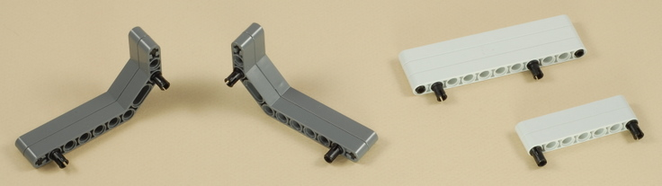
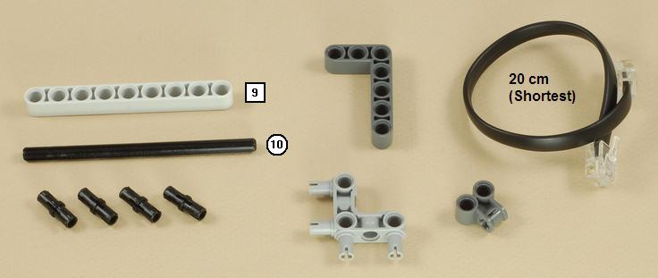

Fun Projects for your LEGO® MINDSTORMS® NXT!
|
|
Fun Projects for your LEGO® MINDSTORMS® NXT! |
| Peg Sorter |
|

1

2
3
4

5

6
7

8
9
10
11
12
13
14
15
16
17

18
19
20
21

22
23
| Connect the light sensor wire to port 3 on the NXT. Insert the pegs into the correct holes as shown below, then adjust the axles until the light sensor sits flat against the beams on the sides of the channel. |
24
| This step builds the conveyer pusher and the
calibration stick, which are loose parts that are not attached to the
sorter machine. |
| The conveyor pusher will be placed behind the pegs on the conveyor, as shown below. |
| The calibration stick is used to calibrate the light
sensor. See "Using the Peg Sorter" below. |
| Peg
Sorter Programming Use the Peg_Sorter program for the Peg Sorter. You will also need the Calibrate_L3 program to calibrate the light sensor beforehand. Important: See the instructions below to calibrate and properly set up the Peg Sorter. |
Using the Peg Sorter
|
Challenges
|
|
Copyright
©
2007-2009 by Dave Parker. All rights reserved. |